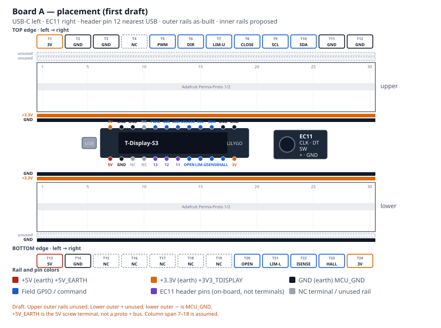
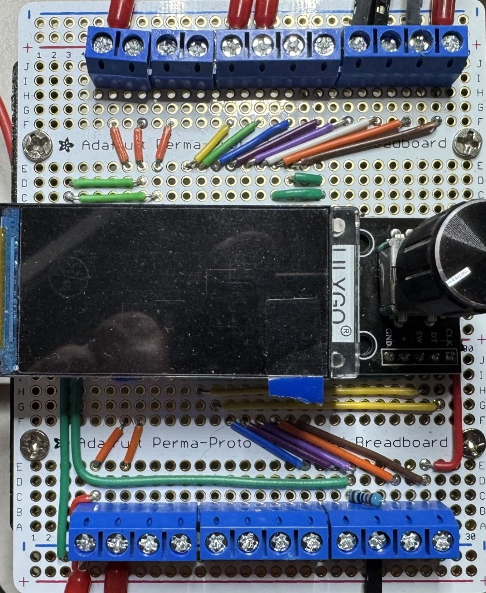

Private Reserve · DIN controller · first draft
Board A — Earth-side control
Dual Adafruit Perma-Proto 1/2 carrier for the LilyGo T-Display-S3 and the EC11 menu encoder. Field I/O and power leave through edge screw terminals. This board is earth-referenced only.
Wiring Guide. Download PDF · Single-page HTML
+5V_ISO, +12V_GD, −70V,
+70V, or SW on Board A.
MCU_GND is not −70V.
1. Placement
View with the display facing you. USB-C is on the left. The EC11 is on the right. Pin 12 of each header is nearest USB. Screw terminals are numbered T1–T12 on the top edge and T13–T24 on the bottom edge, left to right. The top edge starts at T1 (3V, GND, one NC, then PWM, DIR, limits, I²C). The bottom edge starts at T13 (5V, GND, five NC including T17–T19, then OPEN, LIM-L, ISENSE, HALL, 3V). The EC11 uses GPIO11–13 on the T-Display header directly; see EC11 on-board wiring.

2. Rails
Each half has four full-width buses. On the as-built unit both upper outer rails are unused, and the lower outer + rail is unused. The lower outer − rail is MCU_GND. Inner-rail nets below are still proposed. +5V_EARTH lands on the 5V screw terminal and the T-Display 5V pin; it is not on a proto + bus. Sensors / EC11 + should see +3V3_TDISPLAY from the module 3V pin. Do not back-feed 3.3 V into the module.
| Rail | Net | Diagram color |
|---|---|---|
| Upper outer − | unused (as-built; no jumper) | unused |
| Upper outer + | unused (as-built; no jumper) | unused |
| Upper inner + | +3V3_TDISPLAY (proposed) | +3.3V (earth) |
| Upper inner − | MCU_GND (proposed) | GND (earth) |
| Lower inner − | MCU_GND (proposed) | GND (earth) |
| Lower inner + | +3V3_TDISPLAY (proposed) | +3.3V (earth) |
| Lower outer + | unused (as-built; no jumper) | unused |
| Lower outer − | MCU_GND (as-built) | GND (earth) |
3. What attaches
Power
Board A runs from the earth-side Mean Well HDR-15-5 #1 supply
(+5V_EARTH / MCU_GND). Land the PSU positive on
T13 (5V) and the PSU negative on
T14 (GND). Those terminals feed the T-Display
5V pin and the board MCU_GND reference. USB-C
on the module remains for bench programming. Do not back-feed 3.3 V into the
module 3V pin.
Screw terminals
Numbering follows Figure 1: left to right with the display facing you and USB-C on the left. T1 and T13 are nearest USB.
Top edge — T1–T12
| Terminal | Label | GPIO / net | Attaches |
|---|---|---|---|
| T1 | 3V | +3V3_TDISPLAY | SS49E VCC, AS5600 VCC (from module 3V) |
| T2 | GND | MCU_GND | Sensor, limit, and rocker returns |
| T3 | GND | MCU_GND | Sensor, limit, and rocker returns. Lands R6 (PWM) and R7 (DIR) 10 kΩ pull-downs |
| T4 | NC | — | Module NC. Unassigned. May be jumpered to MCU_GND. |
| T5 | PWM | GPIO16 | Board B 6N137 LED. On-board R6 10 kΩ to T3 MCU_GND |
| T6 | DIR | GPIO21 | Board B U4 LED. On-board R7 10 kΩ to T3 MCU_GND |
| T7 | LIM-U | GPIO17 | Upper NC limit to GND |
| T8 | CLOSE | GPIO18 | Close rocker (active-low, paralleled pair) |
| T9 | SCL | GPIO44 | AS5600 SCL |
| T10 | SDA | GPIO43 | AS5600 SDA |
| T11 | GND | MCU_GND | Sensor, limit, and rocker returns; Board B LED return |
| T12 | GND | MCU_GND | Sensor, limit, and rocker returns |
Bottom edge — T13–T24
| Terminal | Label | GPIO / net | Attaches |
|---|---|---|---|
| T13 | 5V | +5V_EARTH | Power in. Mean Well HDR-15-5 #1 (+) → T-Display 5V |
| T14 | GND | MCU_GND | Power in. Mean Well HDR-15-5 #1 (−) / earth-side return |
| T15 | NC | — | Module NC. Unassigned. |
| T16 | NC | — | Module NC. Unassigned. |
| T17 | NC | — | Unassigned. Same index as GPIO13; EC11 SW is on-board from the header (EC11 wiring). |
| T18 | NC | — | Unassigned. Same index as GPIO12; EC11 DT is on-board from the header. |
| T19 | NC | — | Unassigned. Same index as GPIO11; EC11 CLK is on-board from the header. |
| T20 | OPEN | GPIO10 | Open rocker (active-low, paralleled pair) |
| T21 | LIM-L | GPIO3 | Lower NC limit to GND |
| T22 | ISENSE | GPIO2 | ACS712-05B OUT after 10 kΩ/20 kΩ (≤ 3.3 V) |
| T23 | HALL | GPIO1 | SS49E OUT |
| T24 | 3V | +3V3_TDISPLAY | SS49E VCC, AS5600 VCC (from module 3V) |
EC11 (on-board)
The menu encoder wires directly to T-Display-S3 header pins. It does not use screw terminals. Terminals T17–T19 are NC on the as-built unit.
| EC11 breakout | T-Display pin | GPIO / net |
|---|---|---|
| CLK | LEFT GPIO11 | GPIO11 |
| DT | LEFT GPIO12 | GPIO12 |
| SW | LEFT GPIO13 | GPIO13 |
+ | 3V | +3V3_TDISPLAY |
| GND | GND | MCU_GND |
Full notes, terminal clarification, and links: EC11 on-board wiring.
On-board pull-downs
R6 (10 kΩ) sits between T5
(PWM, GPIO16) and T3 (MCU_GND).
R7 (10 kΩ) sits between T6
(DIR, GPIO21) and the same T3 return. They hold the Board B
optocoupler LEDs off if the T-Display is unpowered or resetting. Series LED
resistors stay on Board B.
Board A → Board B
Keyed 3-pin earth-side cable from T5 (PWM),
T6 (DIR), and a MCU_GND terminal
(for example T11 or T14). LED resistors stay
on Board B.
4. As-built photo
Line art is the labeled figure. The photo shows the unit that was built.
